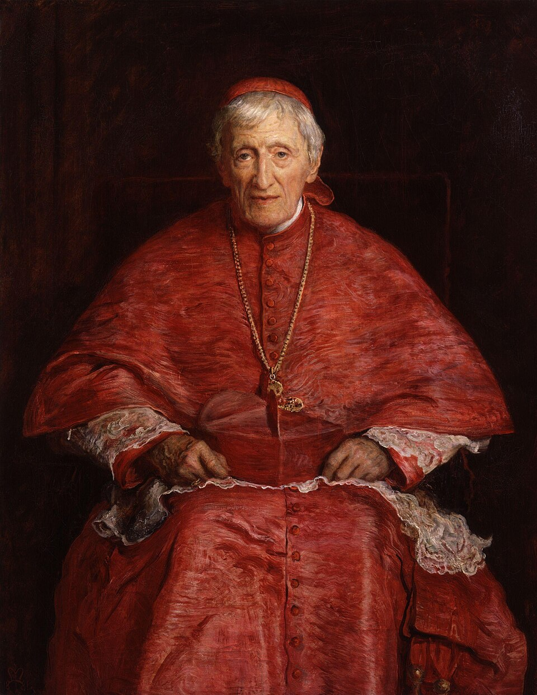

John Henry Newman (1801–1890)

Leben des heiligen John Henry Newman
John Henry Newman wurde am 21. Februar 1801 in London als ältester Sohn eines Bankiers geboren und starb am 11. August 1890 in Edgbaston bei Birmingham. Er wuchs in der anglikanischen Kirche auf, wurde 1822 Fellow des Oriel College in Oxford und 1825 anglikanischer Priester. Ab 1828 war er Pfarrer der Universitätskirche St Mary’s in Oxford; seine Predigten dort zogen viele Studenten an.
Am 9. Oktober 1845 wurde er in Littlemore bei Oxford in die katholische Kirche aufgenommen. Er verlor dadurch Freunde, Ansehen und seine Stellung. 1847 empfing er in Rom die Priesterweihe und gründete in Birmingham das Oratorium des heiligen Philipp Neri. 1879 ernannte ihn Papst Leo XIII. zum Kardinal. Sein Gedenktag ist der 9. Oktober, der Tag seiner Aufnahme in die Kirche.
Heiliger und Kirchenlehrer
Newman wurde am 19. September 2010 von Papst Benedikt XVI. in Birmingham seliggesprochen und am 13. Oktober 2019 von Papst Franziskus heiliggesprochen. Am 1. November 2025, dem Fest Allerheiligen, erklärte ihn Papst Leo XIV. beim Heiligen Jahr der Bildungswelt auf dem Petersplatz zum Kirchenlehrer – als den 38. in der Geschichte der Kirche. Zugleich ernannte er ihn zum Mitpatron der kirchlichen Bildungsarbeit, neben Thomas von Aquin.
In seiner Predigt zitierte Leo XIV. Newmans Lied „Lead, Kindly Light“ („Führ, liebes Licht“) und sagte, Erziehung heiße, dieses Licht des Glaubens an Menschen weiterzugeben, die sonst in Resignation und Angst gefangen blieben.
Ein persönlicher Glaubensweg
Newman war kein Theoretiker, der Glauben am Schreibtisch entwarf. Sein ganzes Werk ist aus seinem eigenen Weg gewachsen – Schritt für Schritt, oft gegen den eigenen Wunsch.
Mit fünfzehn erlebte er seine erste Bekehrung. Im Herbst 1816 – das Bankhaus seines Vaters war pleitegegangen – begegnete er durch den Lehrer Walter Mayers einem lebendigen, persönlichen Glauben. Später schrieb er:
„Als ich fünfzehn war (im Herbst 1816), ging eine große Veränderung des Denkens in mir vor. Ich geriet unter den Einfluss eines bestimmten Glaubensbekenntnisses und nahm Eindrücke vom Dogma in meinen Verstand auf, die – durch Gottes Gnade – nie ausgelöscht oder verdunkelt worden sind.“ Newman, Apologia pro Vita Sua, Kap. 1 (eigene Übersetzung)
Mit 32 kam er schwer krank von einer Reise durch Italien und Sizilien zurück, festgehalten auf einem Orangenschiff, das tagelang in einer Flaute lag. Dort schrieb er das Gedicht, das ihn berühmt machte. Er fühlte schon damals, dass er eine Aufgabe hat: „Ich begann zu denken, dass ich eine Sendung hätte“, und beim Abschied von Monsignore Wiseman in Rom sagte er: „Wir haben in England ein Werk zu tun“ (Apologia, Kap. 1).
„Führe, gütiges Licht, im Dunkel, das mich umgibt, führe du mich weiter! Die Nacht ist finster, und ich bin weit von zu Hause – führe du mich weiter! Halte meine Füße; ich bitte nicht darum, die ferne Szene zu sehen – ein Schritt genügt mir.“ Newman, „The Pillar of the Cloud“ („Lead, Kindly Light“), 1833 (eigene Übersetzung)
Dieser Satz „ein Schritt genügt mir“ ist zum Kern seines Lebens geworden. Newman sah nicht weit voraus. Er ging, was er als Nächstes erkannt hatte – bis zur Wahrheit, die ihn schließlich 1845 in die katholische Kirche führte. Auf seinem Grabstein steht ein Satz, der das zusammenfasst: Ex umbris et imaginibus in veritatem – „Aus Schatten und Bildern in die Wahrheit“.
Seine Berufung
Newman glaubte fest, dass Gott jeden Menschen persönlich meint. Seine Betrachtung „Hoffnung auf Gott, den Schöpfer“ (aus den Meditations and Devotions) ist eines der bekanntesten Gebete der Neuzeit. Er spricht darin von dem, was ihn selbst sein Leben lang trug:
„Ich bin erschaffen, etwas zu tun oder zu sein, wofür kein anderer erschaffen ist; ich habe einen Platz in Gottes Ratschluss, auf Gottes Erde, den kein anderer hat. Ob ich reich oder arm bin, verachtet oder geehrt bei den Menschen, Gott kennt mich und ruft mich bei meinem Namen. Gott hat mich erschaffen, dass ich ihm auf eine besondere Weise diene. Er hat ein bestimmtes Werk mir übertragen und keinem anderen. Ich habe meine Aufgabe, meine Mission (…), ich bin ein Glied in einer Kette, ein Band zwischen Personen. Gott hat mich nicht umsonst erschaffen. Ich soll Gutes tun und sein Werk vollbringen. Ich soll auf meinem Posten ein Engel des Friedens, ein Prediger der Wahrheit sein, ohne es zu wollen, wenn ich nur seine Gebote halte und ihm in meinem Beruf diene.“ Newman, Meditations and Devotions (Betrachtungen und Andachten), Teil „Meditations on Christian Doctrine“: „Hope in God – Creator“ (Hoffnung auf Gott, den Schöpfer); deutsche Fassung, nicht wörtlich nach dem englischen Original geprüft
Papst Johannes Paul II. nahm diesen Gedanken auf, als er 2001 zu Newmans 200. Geburtstag schrieb: Newman habe über Gottes Plan in seinem eigenen Leben nachgedacht und sei zu der tiefen Überzeugung gekommen, Gott habe ihm einen bestimmten Dienst aufgetragen, den er keinem anderen gegeben habe. Gerade deshalb gehöre Newman „jeder Zeit, jedem Ort und jedem Volk“.
Das ist auch Newmans Antwort auf die Frage, was die Berufung eines Christen ist: nicht zuerst ein großes Amt, sondern ein bestimmter Platz, den nur diese eine Person ausfüllen kann – im Beruf, in der Familie, an dem Ort, an den Gott sie gestellt hat. Seine eigene Berufung war es, durch Predigen, Lehren und Schreiben Menschen zur Wahrheit zu führen. Papst Benedikt XVI. nannte ihn bei der Seligsprechung deshalb einen Seelsorger, dessen Wahlspruch Cor ad cor loquitur – „Das Herz spricht zum Herzen“ – das ganze christliche Leben als Ruf zur Heiligkeit beschreibt: als das tiefe Verlangen des menschlichen Herzens nach Gemeinschaft mit dem Herzen Gottes.
Die Oxford-Bewegung
Am 14. Juli 1833 hielt John Keble in Oxford eine Predigt gegen die Einmischung des Staates in die Kirche. Newman nannte diesen Tag später den Beginn der „Oxford-Bewegung“. Er und seine Freunde gaben die „Tracts for the Times“ heraus: Flugschriften, die die anglikanische Kirche an ihre katholischen Wurzeln erinnern sollten – Sakramente, bischöfliche Ordnung, Lehre der Kirchenväter.
Newman verstand die Anglikanische Kirche damals als „Via Media“, als Mittelweg zwischen Rom und dem Protestantismus. Der 90. Traktat (1841) versuchte zu zeigen, dass die 39 Artikel der anglikanischen Kirche im katholischen Sinn ausgelegt werden können. Das löste einen Sturm der Empörung aus.
Der Weg in die katholische Kirche
Den Wendepunkt beschreibt Newman in seiner Lebensgeschichte, der Apologia pro Vita Sua (1864). Es waren drei Schritte:
- 1839 – der Spiegel der Monophysiten. Newman las über die Monophysiten, eine Gruppe, die sich im 5. Jahrhundert von der Kirche getrennt hatte, und erkannte: „Ich sah mein Gesicht in diesem Spiegel, und ich war ein Monophysit.“ Der Anglikanismus stand zu Rom wie diese Gruppe zur Kirche des Reiches. Dazu kam ein Satz des heiligen Augustinus gegen die Donatisten: Securus judicat orbis terrarum – „der ganze Erdkreis urteilt sicher“. Damit, schreibt Newman, sei die Theorie von der Via Media „in Staub zerfallen“.
- 1841–1843 – der Rückzug. „Seit Ende 1841 lag ich, was meine Zugehörigkeit zur anglikanischen Kirche angeht, auf dem Sterbebett.“ Er zog sich nach Littlemore zurück, widerrief 1843 früher geäußerte harte Worte gegen Rom und gab sein Pfarramt in Oxford auf.
- 9. Oktober 1845 – die Aufnahme. Der Passionistenpater Dominic Barberi nahm ihn in Littlemore in die katholische Kirche auf. Für Newman war es kein Sprung ins Dunkle, sondern die Folge seines Glaubens an einen persönlichen Gott: „Ich bin Katholik kraft meines Glaubens an Gott“ – denn zwischen Atheismus und Katholizität, sagt er, gebe es in wahrer Philosophie keinen Mittelweg.
Aus dem Studium der Kirchenväter wuchs seine Überzeugung. Besonders prägten ihn Alexandrien und Athanasius: Er schrieb ein Buch über die Arianer des 4. Jahrhunderts und übersetzte Athanasius ins Englische. Nach seinem Übertritt beschrieb er den Schritt so: Es sei gewesen, „als käme man nach rauer See in den Hafen“.
„Tief in der Geschichte zu stehen heißt, aufzuhören, Protestant zu sein.“ Newman, Essay über die Entwicklung der christlichen Lehre (1845), Einleitung (eigene Übersetzung)
Entwicklung der Lehre
Im Essay über die Entwicklung der christlichen Lehre (1845) fragt Newman, warum die Kirche heute mehr lehrt, als die Apostel ausdrücklich gesagt haben. Seine Antwort: Eine lebendige Idee entfaltet sich, ohne sich selbst zu verlieren – wie ein Mensch, der wächst und doch derselbe bleibt. Junge Vögel werden nicht zu Fischen.
Damit man eine echte Entfaltung von einer Entstellung unterscheiden kann, nennt er sieben „Kennzeichen“:
- Der Grundtyp bleibt erhalten (Bewahrung des Typs).
- Die Grundsätze bleiben dieselben (Kontinuität der Prinzipien).
- Die Idee kann Neues aufnehmen, ohne sich zu verlieren (Assimilationskraft).
- Die Entwicklung folgt logisch aus dem Früheren.
- Spätere Gestalten sind schon in den Anfängen angedeutet (Vorwegnahme der Zukunft).
- Die Entwicklung schützt und stützt das Frühere (bewahrende Wirkung auf die Vergangenheit).
- Sie bleibt über lange Zeit lebendig (Dauerhafte Lebenskraft).
„Hier unten heißt leben sich wandeln, und vollkommen sein heißt, sich oft gewandelt zu haben.“ Newman, Essay über die Entwicklung der christlichen Lehre, Kap. 1 (eigene Übersetzung)
Das Gewissen
Newman verteidigte das Gewissen nicht als Freibrief für die eigene Meinung, sondern als Stimme Gottes im Menschen. Seine eigene Gotteserfahrung kam aus dem Gewissen: Er erkannte Gott „als persönliches, allsehendes, allrichtendes Wesen in meinem Gewissen“ (Apologia, Kap. 4).
In seinem „Brief an den Herzog von Norfolk“ (1875) schreibt er, das Gewissen sei der „ursprüngliche Stellvertreter Christi“. Der Katechismus der Katholischen Kirche zitiert diesen Satz (KKK 1778). Newman schrieb den Brief als Antwort auf den Vorwurf, Katholiken könnten wegen der päpstlichen Autorität nicht mehr nach ihrem Gewissen handeln.
„Das Gewissen ist der ursprüngliche Stellvertreter Christi, ein Prophet in seinen Mitteilungen, ein König in seinem Gebieten, ein Priester in seinem Segnen und Verfluchen.“ Newman, Brief an den Herzog von Norfolk, Abschnitt 5 (eigene Übersetzung)
Berühmt ist sein Trinkspruch am Ende desselben Briefes: Er würde auf den Papst trinken, wenn man wolle – aber zuerst auf das Gewissen und dann auf den Papst. Gemeint ist ein Gewissen, das sich an Gott und seiner Wahrheit bildet, nicht Willkür.
Wie der Mensch zum Glauben kommt
In seiner „Grammar of Assent“ („Entwurf einer Zustimmungslehre“, 1870) fragt Newman, wie ein Mensch zu echter Gewissheit kommt. Er sagt: Nicht Beweise allein, sondern das Zusammenwirken vieler Gründe, die der ganze Mensch abwägt, führen zur Gewissheit. Er nennt das den „illative sense“ („Folgerungssinn“), vergleichbar dem gesunden Menschenverstand oder dem Sinn für das Schöne. Gewissheit ist für ihn ein Zustand des Geistes, nicht nur eine Eigenschaft von Sätzen.
Der Katechismus (KKK 157) übernimmt von Newman den Satz, dass „zehntausend Schwierigkeiten nicht einen einzigen Zweifel“ ergeben – Schwierigkeiten im Glauben sind noch kein Zweifel.
Gebet und Seelsorge
Newman war sein Leben lang Seelsorger – zuerst in Oxford, dann in Birmingham. Das Gebet hielt er für den Ort, an dem sich ein Mensch verändert. In einer Predigt, die Benedikt XVI. bei der Seligsprechung zitierte, sagt er:
„Die Gewohnheit des Gebets, die Übung, sich in jeder Jahreszeit, an jedem Ort, in jeder Notlage Gott und der unsichtbaren Welt zuzuwenden – das Gebet, sage ich, hat eine natürliche Wirkung: Es vergeistigt und erhebt die Seele. Der Mensch ist nicht mehr, was er vorher war; allmählich … hat er eine neue Gedankenwelt in sich aufgenommen und ist von neuen Grundsätzen durchdrungen.“ Newman, Parochial and Plain Sermons IV, S. 230–231 (eigene Übersetzung); zitiert von Benedikt XVI., Seligsprechung, 19.9.2010
Auch vom Priestertum hatte er ein sehr menschliches Bild: Engel wären keine guten Priester, denn sie könnten nicht so mit den Menschen fühlen und mit ihnen Nachsicht haben wie die, die aus ihrer Mitte kommen (Predigt „Men, not Angels“, Discourses to Mixed Congregations).
Wissen, Glaube und Bildung
Als Gründungsrektor der katholischen Universität in Dublin (ab 1854) hielt Newman die Vorlesungen „The Idea of a University“. Seine These: Eine Universität ohne Theologie ist unvollständig, denn die Lehre von Gott gehört zu allem Wissen. Zugleich verteidigt er das Wissen um seiner selbst willen und sagt, die „liberale Bildung“ bilde gute Glieder der Gesellschaft (Vorlesungen 5 und 7). Benedikt XVI. hebt hervor, dass Newman jeden verkürzenden oder bloß nützlichkeitsorientierten Ansatz ablehnte: Verstandesbildung, sittliche Zucht und Glaube sollten zusammenkommen. Deshalb ernannte ihn Leo XIV. zum Mitpatron der Bildung, neben Thomas von Aquin.
Predigten und Meditationen
Newmans Predigten (Parochial and Plain Sermons) sind schlicht und streng. In der Predigt über die Strenge des Gesetzes Christi sagt er: „Wir können unseren Herrn wählen, aber Gott oder Mammon müssen wir dienen.“ In der Predigt „Unreal Words“ klagt er, nichts sei so selten wie Ehrlichkeit und Einfachheit des Geistes. Andere Predigten sprechen von Frieden im Glauben und von der Gelassenheit des Christen.
Aus seinem Nachlass stammen Betrachtungen für den Mai (32 Meditationen über Maria von der Unbefleckten Empfängnis bis zur Himmelfahrt) und Betrachtungen zum Kreuzweg. In der ersten Station meditiert er über das Todesurteil: „Wer hat es unterschrieben als ich, als ich meine ersten Todsünden beging?“ In den Mai-Betrachtungen nennt er Maria „von den heiligen Vätern eine zweite und bessere Eva“ und sagt, sie leuchte „nicht für sich selbst, sondern sie ist der Widerschein ihres und unseres Erlösers“.
Warum Newman für uns wichtig ist
Newman zeigt, wie ein ehrlicher Suchender, der die Geschichte ernst nimmt, zur katholischen Kirche kommen kann – nicht gegen den Verstand, sondern mit ihm. Er lehrt, dass Glaube kein bloßes Gefühl ist, sondern ein Dogma, das ein Leben trägt: „Das Dogma war das Grundprinzip meiner Religion; eine andere Religion kenne ich nicht“ (Apologia, Kap. 2). Er erinnert daran, dass das Gewissen nicht über der Wahrheit steht, sondern vor ihr steht und ihr gehorcht. Und er zeigt, dass jeder Glaubensweg persönlich ist: Gott kennt jeden beim Namen und hat jedem einen Platz in seinem Plan gegeben.
Quellen
Texte (alle gemeinfrei, Newman Reader): Apologia pro Vita Sua, Essay on the Development of Christian Doctrine, Grammar of Assent, Idea of a University, Brief an den Herzog von Norfolk, Lead, Kindly Light. Berufungsgebet: Newman, Meditations and Devotions, zitiert von Johannes Paul II., Brief zum 200. Geburtstag Newmans (2001). Seligsprechungspredigt: Benedikt XVI., Birmingham, 19. September 2010. Kirchenlehrer-Erklärung: Vatican News, 1. November 2025. Katechismus der Katholischen Kirche Nr. 157 und 1778. Alle deutschen Zitate außer dem Berufungsgebet sind eigene Übersetzungen der englischen Originale.